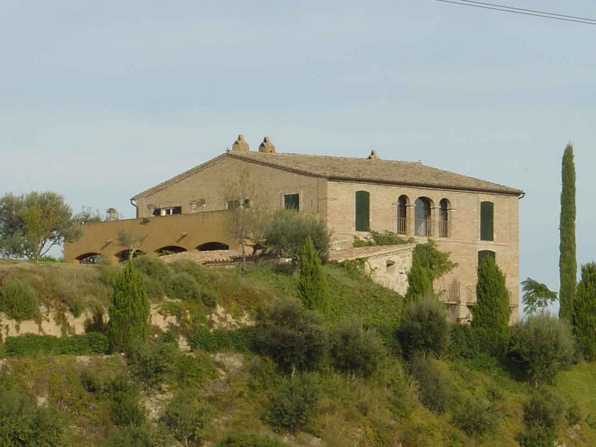
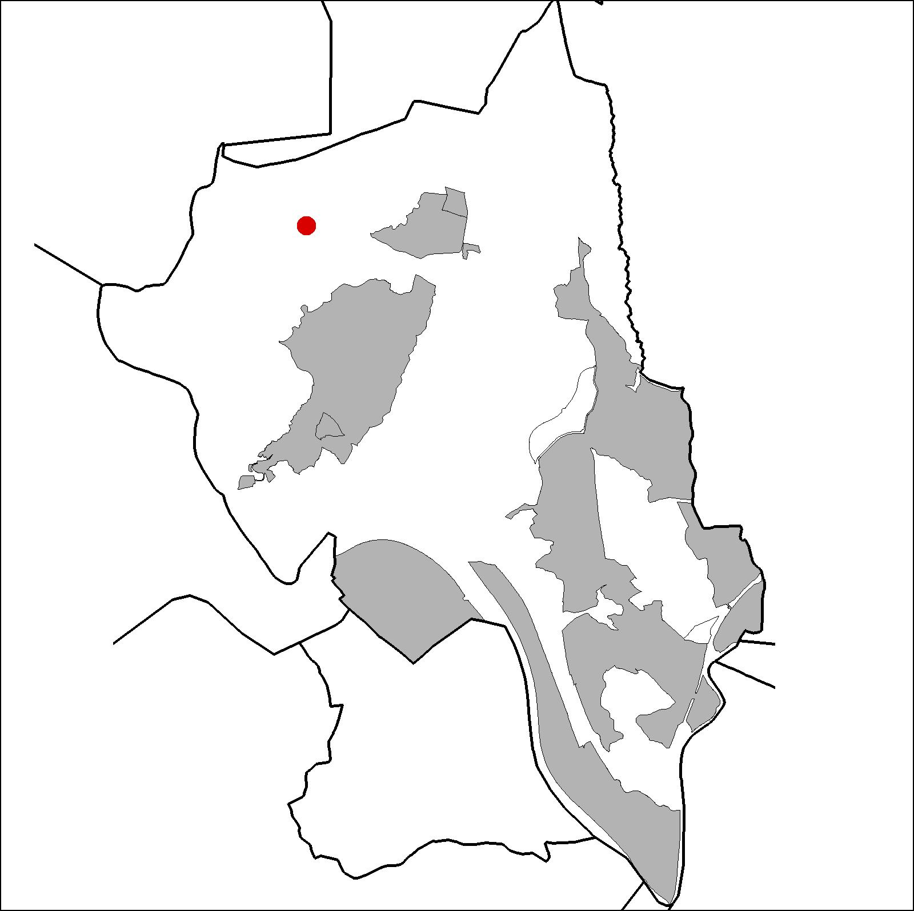

|  |  |
Nom de l’element: Can Puig
Clau d’identificació: B.1.11
Nucli o indret: Oest de la Serra de l’Ametller.
UTM: X= 412.134, Y= 4.595.001, 185 m snm.
Referència cadasrtral: Poligon 17, parcel·la 9503 (002302000DF19E0001TT)
Règim del sòl: Sòl no urbanitzable.
1.1. Època de construcció i tipologia:
La masia originària, d’estil gòtic, era del segle XIV i tenia l’entrada amb un arc de mig punt, d’amples dovelles. Posteriorment es va reedificar al 1848. A mitjans del segle XX les terres van deixar de ser rentables i els propietaris van vendre la casa, i poc després, els masovers van deixar la finca. La casa va estar sotmesa a actes de vandalisme i posteriorment, va ser reformada al 1994. Els murs són de mamposteria, tàpia i maó, i la coberta és de fusta i teula. La casa principal del 1848 és una construcció de planta sensiblement quadrada de tres cossos i tres pisos, el primer dels quals és cobert amb voltes a la catalana amb rajoles, amb tancaments de fàbrica de totxo massís amb una interessant disposició de maons fent dibuixos en finestra i ràfecs de la façana principal. Les restes de l’antic estable estan al nord de la finca i estan en ruïnes. El cos antic del conjunt és el celler, reutilitzat en el cos principal com a cuina. El mur del recinte i les construccions auxiliars tenen un estat de conservació desigual.
1.2. Estat de conservació:
1.2. Estat de conservació:
Molt bo. El cos principal està en bon estat. L’antic sector de masoveria es troba en ruïnes.
1.3. Ús actual:
Habitatge (antigament era residència temporal en època d’estiu i explotació vitivinícola).
1.4. Accés:
Accés fàcil pel Camí de Can Pastallé a Can Santeugini o des del Camí Nou de Martorell a Ullastrell.
Masia del 1848, originària del s. XIV, d’estil gòtic.
3.1. Usos admesos:
Habitatge rural (màxim 3 habitatges); residencial; hoteler (excepte aparthotel; i amb un màxim de 30 places); oficines i serveis; industria vinculada a productes del camp (industrial, categoria 1ª); educatiu; recreatiu cultural i social; recreatiu de restauració; esportiu.
3.2. Condicions d’ordenació:
Pla Especial de protecció del patrimoni (aprovat 20/02/1997 – exp.1995/002414/B)
3.3. Accés i serveis:
Camí de Can Pastallé a Can Santeugini o des del Camí Nou de Martorell a Ullastrell.
BCIL (Bé Cultural d’Interes Local)